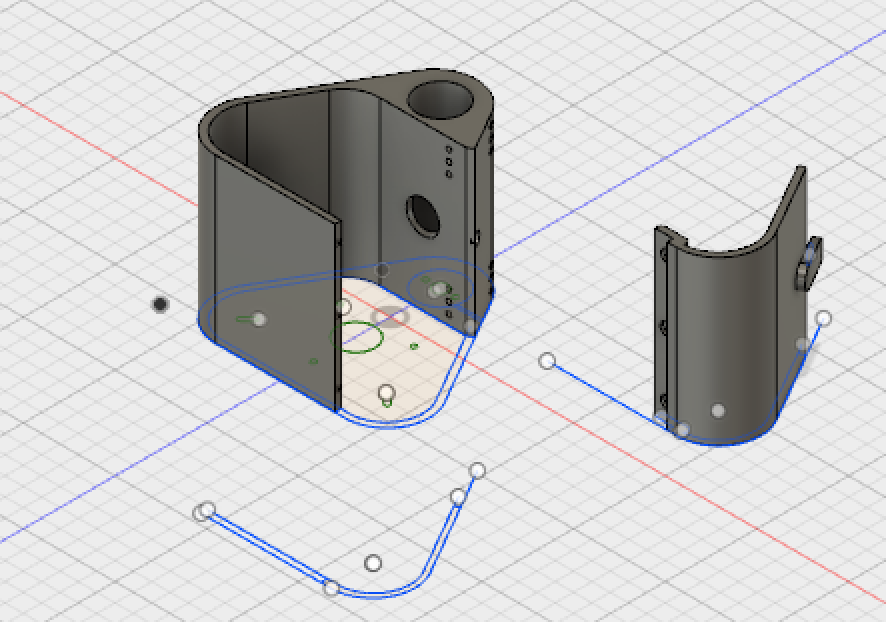
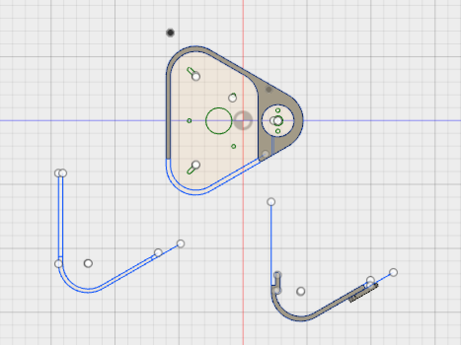
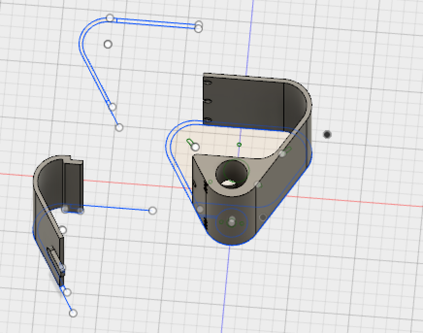

Mo - An Agile Tread Robot
As both an engineer and a designer, prototyping is for me one of the
most rewarding forms of art. In spring 2017, I took a class at UC Berkeley's Jacobs Institute for Design Innovation on
prototyping and fabrication where my final project was to design, engineer, build, and program a Bluetooth-controlled
robot vehicle from scratch with the ultimate goal of navigating hands-free through a mystery obstacle course.
I worked with the Arduino IDE, Arduino Uno microcontrollers, Adafruit Bluefruit modules,
neopixels, and other electronics to motorize
and control a chassis-based robot constructed from scratch using 3D modeling, laser cutting, and other prototyping
equipment.
Below, I have created a walk-through of my creative engineering process that went behind the creation of Mo, along with some
videos of Mo in action!
Since I created Mo completely from scratch, I designed, engineered, and printed all non-electronic parts of Mo in
Autodesk Fusion 360, a 3D CAD program that
allows for desiging, engineering, and simulating. I went through many iterations of designing in order to get the chassis of the robot
just right. Factors to consider included properly designating internal space for the electronics, engineering the motor compartments and
accompanying fasteners, and designing for the inclusion of magnets to solidfy the encasing structure while also allowing for easy access to
the internal electronics.
Below are some different views of the Fusion file I created for Mo's chassis.
Below are some different views of the Fusion file I created for Mo's chassis.



The finalized, full-poly version of the chassis and hinged door took almost 12 hours to print on the
Ultimaker 2+, a wonderful and
user-friendly 3D printer. All of my tweaking, precise measuring, and iterating paid off when I ended up with the
compact and flush chassis shown below.


Since one of the main challeneges in the final exam obstacle course was a steeply-inclined ramp
that needed to be both ascended and descended, I decided to engineer Mo as a tread-based robot in order to be able to face the
challenge of simultaneously having the capacity to ascend surely and descend without slipping. I 3D-printed dozens of treads that
I hooked together using fine metal rods, which ultimately encased two laser-cut acrylic faces that enclosed the three gears
composing the triangular-shaped tread hold.
Designing the files to be sent to the laser-cutter required just as many iterations as did the 3D chassis files. I made 2D laser cut files in Illustrator with appropriately placed and sized holes for gears I 3D printed to match with the tread cable. Once everything was cut and printed, I sandwiched the gears between the acrylic walls and held everything together with nuts and bolts and appropriate spacers. This made for an easy way to fit the cable tread over the gears while allowing for future iterations.
I designed the lead gears to attach to the motors that nested in Mo's chassis, so the treads were firmly connected to the chassis body while also being easily adjustable as shown below.
Designing the files to be sent to the laser-cutter required just as many iterations as did the 3D chassis files. I made 2D laser cut files in Illustrator with appropriately placed and sized holes for gears I 3D printed to match with the tread cable. Once everything was cut and printed, I sandwiched the gears between the acrylic walls and held everything together with nuts and bolts and appropriate spacers. This made for an easy way to fit the cable tread over the gears while allowing for future iterations.
I designed the lead gears to attach to the motors that nested in Mo's chassis, so the treads were firmly connected to the chassis body while also being easily adjustable as shown below.


One of my goals throughout the process of constructing the robot was to make all of the parts structurally reliable while allowing for
flexibility. As such, I compartamentalized Mo's design in order to allow for an easy take-apart process to facilitate debugging, electronic
access, updates, and maintenance. In addition to the treads being easily removed from the chassis body, and the treads being easily
deconstructed, I also engineered a flushed mangentized door that enabled a quick take-apart process with very little structural interference.
In the video below I have provided a quick demo of Mo's sturdy decomposability.
In the video below I have provided a quick demo of Mo's sturdy decomposability.
Mo is controllable completely via Bluetooth thanks to an Adafruit Bluefruit module
that I programmed into Mo's circuit board. I coded the controls into an app for both iOS and Android devices.
After programming Mo's controls, I decided to add a ring of neopixels
to each of Mo's tread wheels that make chasing patterns to correspond with different actions. All of Mo's code was written in the
Arduino IDE. Check out my code for this project on GitHub.


Special thanks to the team and resources at the CITRIS Invention Lab for the support and assistance that
made this project possible and for giving me a lab to call home for the semester!